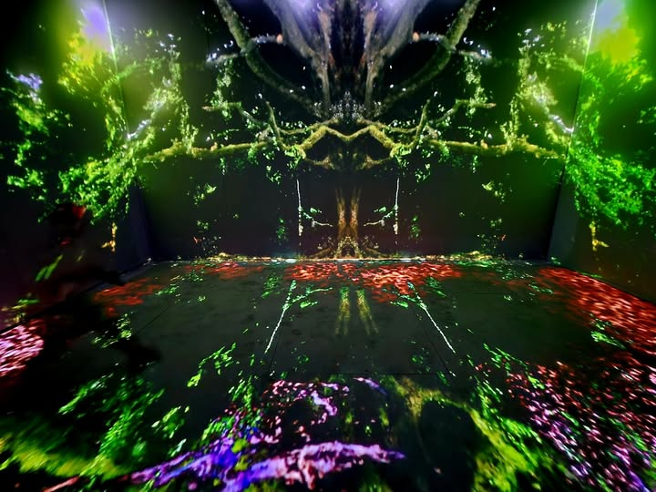
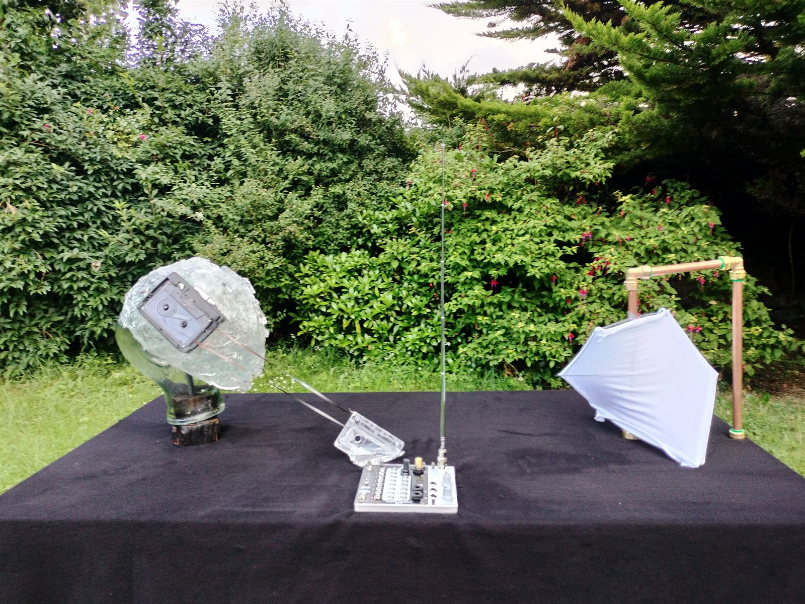
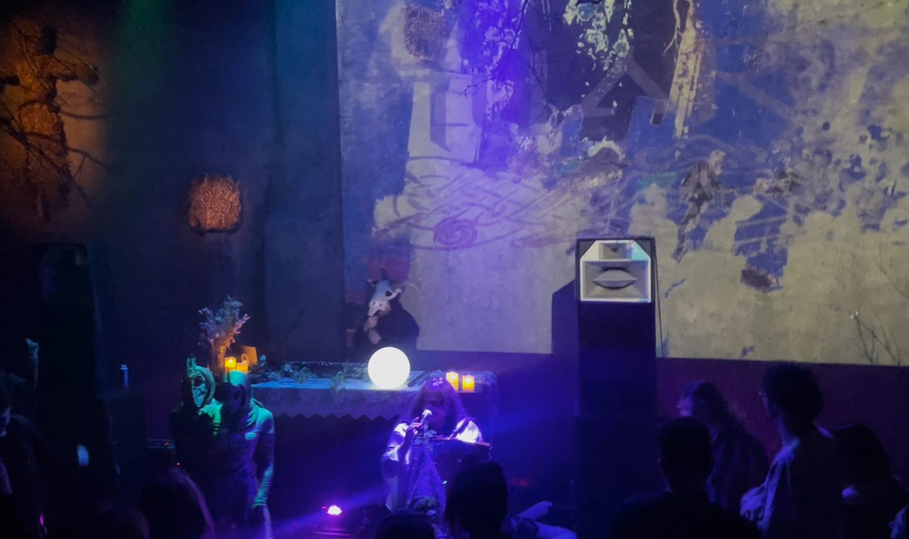
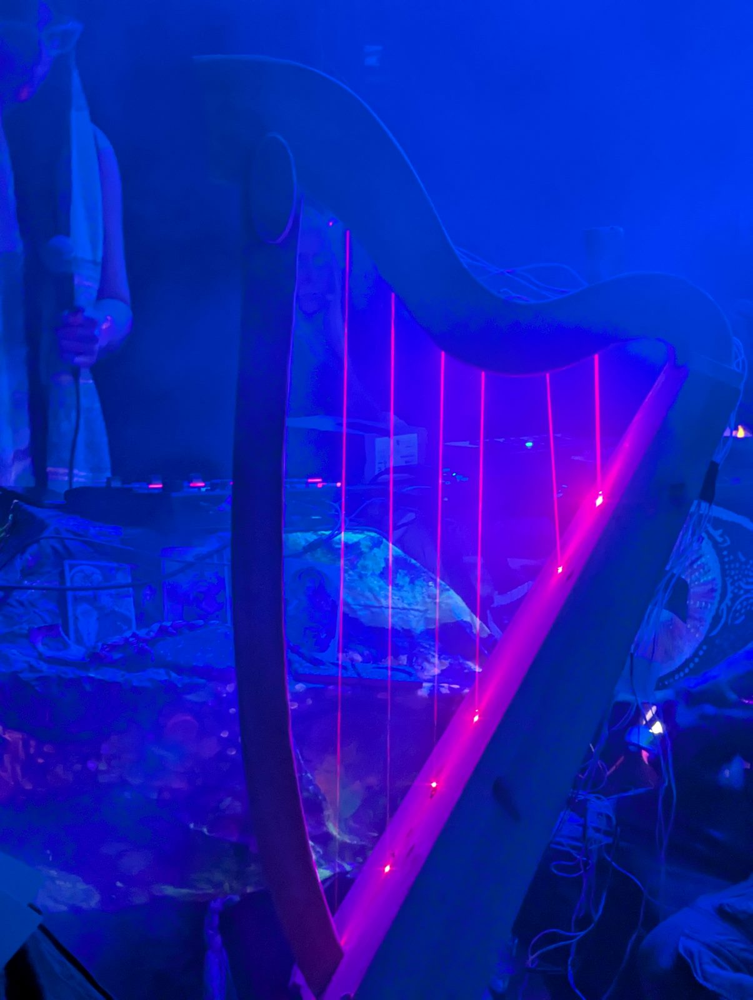
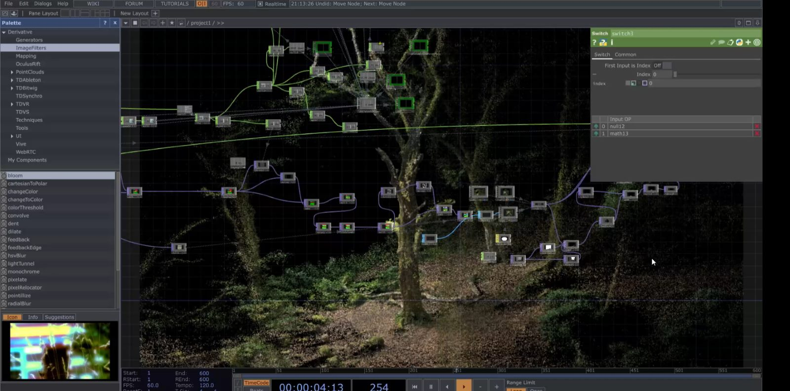
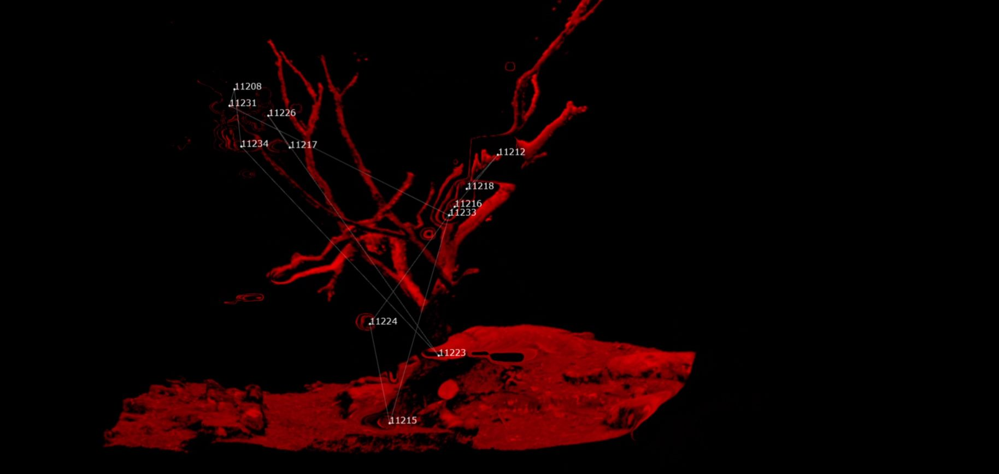

GALLERY INSTALLATION
Funeral for Ashes
2025–2026

KINETIC SCULPTURE
Oscillation
2023

AV / LIVE PERFORMANCE
Audioreactive VJ sets
Ongoing

AV / LIVE PERFORMANCE
Live performance
2024

GALLERY / RESIDENCY
CREW Residency
2024

AV / RESEARCH
Point cloud studies
2024–2025